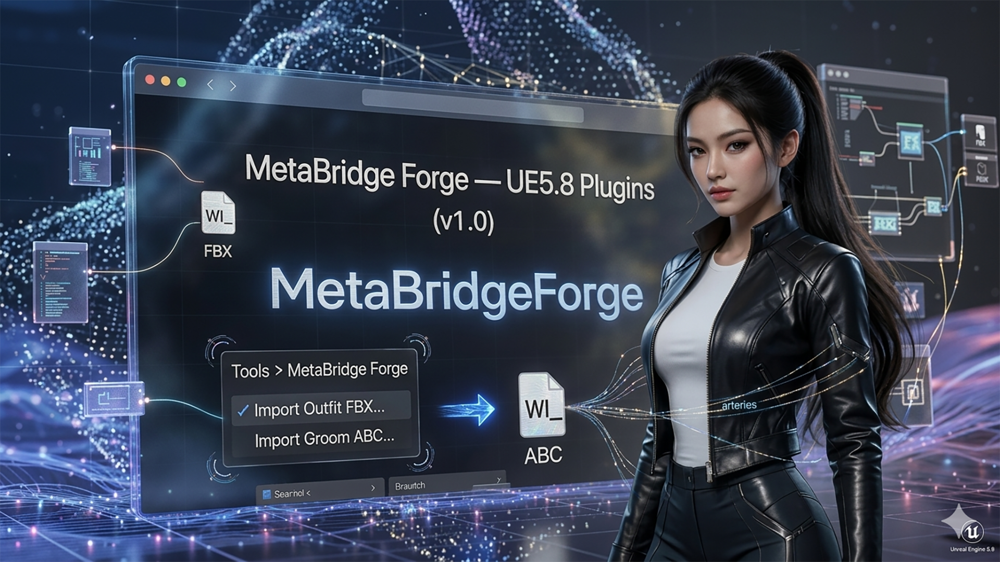

MetaBridge Forge — User Guide (v1.1)

An editor plugin that automates MetaHuman outfit (clothing) and groom (hair) preparation. Aside from picking one FBX/Alembic file, everything from import through Wardrobe Item creation and verification happens automatically, with no manual steps in between.
Zero setup required — the template assets the pipelines are built on are bundled inside the plugin itself, so it works out of the box even in a brand-new project with an empty Content/ folder. Just install the plugin and use the menu.
Menu Location
Editor top menu: Tools > MetaBridge Forge
- Import Outfit FBX... — full outfit (clothing) pipeline
- Import Groom ABC... — full groom (hair) pipeline
Both menu items only show a file-picker dialog; everything else is automatic. A popup only appears on failure.
Templates: Bundled, No Project Setup Needed
This plugin doesn't generate content from scratch — it duplicates a template and retargets it. In earlier versions (v1.0) the templates had to already exist in the project's own Content/ folder; since v1.1 that is no longer required. The template assets (a working OA_/CA_ outfit set, and a groom's GroomMesh/Materials set) are bundled inside the plugin's own content under /MetaBridgeForge/Templates/ (both fully self-contained — verified to have zero external /Game/ dependencies, and verified end-to-end by running both pipelines cloning from the bundled copies), so in a fresh project the plugin works out of the box with no setup.
Template resolution order (automatic, per run):
- Project override first — if the project has its own template at
/Game/Outfits/<OUTFIT_TEMPLATE_DEFAULT>/(with a real OA_ inside) or atGROOM_TEMPLATE_FOLDER, that one is used. - Plugin fallback — otherwise the bundled copy under
/MetaBridgeForge/Templates/is used. (Leftover redirectors from moving templates around do not count as a project override — the resolver checks for real assets.)
Setting (Content/Python/mbforge/config.py) |
Purpose |
|---|---|
OUTFIT_TEMPLATE_DEFAULT |
Name of the template outfit (default "BasicOutfit") — used for both the project-override lookup and the plugin-bundled lookup |
GROOM_TEMPLATE_FOLDER |
Project-override path for the groom template (default "/Game/Grooms/Beard_A/Beard_A") |
PLUGIN_GROOM_TEMPLATE_FOLDER |
Plugin-bundled groom template path — only change if you rebundle a different groom into the plugin |
To see the bundled templates in the Content Browser, enable Settings > Show Plugin Content.
If no template can be found in either location, nothing crashes — the run fails immediately with a "template not found" error in the log.
How to edit config.py (optional — only for using your own project templates)
With the bundled templates, no config editing is required. Edit Plugins/MetaBridgeForge/Content/Python/mbforge/config.py only if you want a specific project template to take priority over the bundled one. Only the paths/names inside the quotes need to change.
# 1) Outfit template name - if "/Game/Outfits/<this name>/" contains a real OA_, it wins over the bundled template
OUTFIT_TEMPLATE_DEFAULT = "BasicOutfit" # → e.g. "MyTemplateOutfit"
# 2) Groom template folder - if this folder contains real assets, it wins over the bundled template
GROOM_TEMPLATE_FOLDER = "/Game/Grooms/Beard_A/Beard_A" # → e.g. "/Game/Grooms/MyTemplateGroom/MyTemplateGroom"
Tip for finding the exact path: right-click the folder/asset in the Content Browser → Copy Reference to get the full, exact path.
You don't need to restart the editor after changing values — it may already be picked up the next time you click a menu item, but to be sure, reload it from the Python console:
import importlib
from mbforge import config
importlib.reload(config)
Import Outfit FBX...
- Click the menu → pick the garment FBX file
- What happens automatically:
- Imports the garment as a Static Mesh + duplicates the template's reference body (
/Game/Outfits/<name>/<name>/Meshes/) - Duplicates the template OA_/CA_ (+ their own Dataflow graphs) wholesale (
/Game/Outfits/<name>/) - Retargets the duplicated CA_'s mesh references and the OA_'s
SizedOutfitSourceto point at the newly imported mesh - Creates
WI_<name>Wardrobe Item + runs verification - The outfit name is auto-derived from the FBX filename (special characters replaced with
_). - On success, only a log entry is written (Output Log) — no popup. On failure, an error popup appears with details in the Output Log.
Import Groom ABC...
- Click the menu → pick the hair Alembic (.abc) file
- What happens automatically:
- Clones the GroomMesh/Materials template files + imports the .abc as the groom asset (
/Game/Grooms/<name>/) - Creates a binding (
GB_<name>) onto the cloned reference head - Creates the
WI_<name>Wardrobe Item - The groom name is auto-derived from the .abc filename.
- On success, only a log entry is written — no popup. On failure, an error popup appears.
Out of Automated Scope (manual work)
The following were deliberately left manual, since they need case-by-case judgment:
- Mesh retargeting for the compound case of an outfit with multiple CA_'s (call
duplicate_build.retarget_cloth_asset_meshes/retarget_outfit_sourcedirectly from the Python console) - Assigning a finished
WI_to an actual MetaHuman character's slot (character.internal_collection.try_add_item_from_wardrobe_item(slot_name=..., wardrobe_item=wi_asset)) - Groom hair color/material customization
If Something Goes Wrong
- Check the Output Log for lines starting with
MetaBridge Forge:(Window > Developer Tools > Output Log) - Each pipeline function can be called directly from the Python console to re-run just one step, e.g.:
from mbforge import duplicate_build, groom, wardrobe duplicate_build.retarget_duplicated_outfit("MyOutfitName", garment_mesh, body_mesh) groom.finish_groom_setup("MyGroomName") wardrobe.finish_outfit_setup("MyOutfitName")
Moving to Another Project/Computer
Zipping up the plugin folder (Plugins/MetaBridgeForge/) is enough — the template assets are bundled inside the plugin's Content/Templates/ folder, so nothing else needs to be migrated. Checklist:
- Copy the entire
Plugins/MetaBridgeForge/folder into the target project'sPlugins/folder. - If
Binaries/Win64/is included, it works without a rebuild as long as the engine version is exactly the same (currently UE 5.8, same build as the Epic Games Launcher install). Intermediate/andContent/Python/**/__pycache__/are build/runtime cache — no need to bring these along (safe to exclude from the zip).- If the engine version differs,
Source/must be included, and the target machine will automatically trigger a one-time rebuild. - Do include
Content/Templates/— that's the bundled template data the pipelines clone from. - Confirm the target project's
.uprojecthas theChaosOutfitAssetandChaosClothAssetengine plugins set toEnabled: true. - (Optional) If the target project has its own, better-fitting template outfit/groom, point
config.py'sOUTFIT_TEMPLATE_DEFAULT/GROOM_TEMPLATE_FOLDERat it — project templates always take priority over the bundled ones.
Version
v1.1 — Template content (BasicOutfit outfit set, Beard_A groom set) moved into the plugin's own Content/Templates/, with project-first/plugin-fallback resolution — pre-existing base templates in the project are no longer required; the plugin works out of the box in a fresh project. Both pipelines verified end-to-end cloning from the bundled templates. Candidates for the next version: multi-CA_ support, automatic character-slot assignment, head accessories.
v1.0 — Outfit/groom one-shot import pipelines complete. Unused dead code removed (BODY_SKELETON_PATH/HEAD_SKELETON_PATH in config.py, confirm() in dialogs.py).